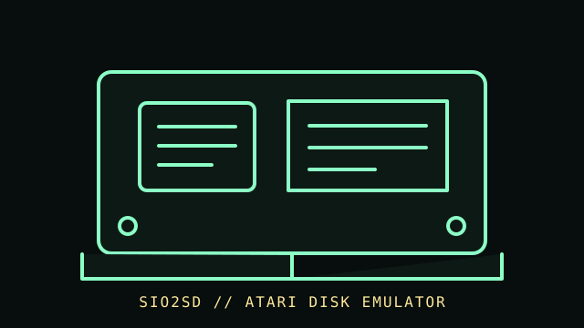

[ FLOPPY DRIVES // IDENTIFIED MODEL ]
SIO2SD Atari Disk Emulator
SIO2SD is an Atari 8-bit disk-drive emulator that presents disk images from SD-card storage through the Atari SIO peripheral interface. It is not a floppy mechanism and does not read magnetic media by itself.

MODEL IDENTIFICATION: SIO2SD device; record hardware/PCB revision, firmware build, wiring, SD-card contents, and Atari host configuration. This record keeps variant-dependent claims qualified; verify the physical unit and applicable manual before connecting, servicing, or formatting media.
Recorded specifications
| Catalog model | SIO2SD Atari Disk Emulator |
|---|---|
| Device type | Atari SIO disk-drive emulator |
| Interface / connector | Atari SIO peripheral bus; hardware, cable, firmware, and host compatibility must match the device documentation. |
| Media / formats | Disk-image files stored on SD card; supported image types and disk geometry depend on firmware/software and Atari host. No magnetic-media capacity is attributed to the emulator. |
| Revision caution | Match full model code, board/ROM/firmware revision, connector, cable, and documentation edition. Family-level ratings and host claims do not automatically apply to every unit. |
Host-controller and format compatibility
- Use with supported Atari 8-bit computers and SIO wiring as documented by the project. It is not USB storage and does not directly connect to a PC floppy controller.
- Firmware revision and selected image format determine compatibility. Preserve configuration and test boot/data operations on the specific host/software.
- A file-based emulator cannot reproduce all physical disk defects, analog behavior, copy protection, or flux transitions. Use a preservation controller for physical-media acquisition.
Preservation and safe cleaning
Disconnect host power before wiring. Preserve and checksum SD-card images and configuration; keep originals unmodified. Protect electronics from ESD and moisture. No head cleaning is applicable because this emulator contains no magnetic drive mechanism.
For a disk acquisition, record the physical media label and condition, drive/model/revision, controller, host, software/firmware, settings, and any errors. Keep original media and raw captures/images unchanged; checksum verified copies and document conversions as derivatives.
Primary manuals & standards/archive references
- SIO2SD Atari 8-bit Disk Emulator Quick Guide — Internet ArchiveArchived guide for the SIO2SD device and Atari system connection.
- SIO2SD project source and hardware — GitHubProject documentation and source; verify the exact hardware and firmware revision.
- Atari XF551 owner manual — Internet ArchiveAtari SIO host/peripheral context; not the SIO2SD device manual.
Source scope is stated per link. Prefer the matching manufacturer manual and revision over family summaries. Capacities and recording modes are omitted when not supported for the exact model and format.